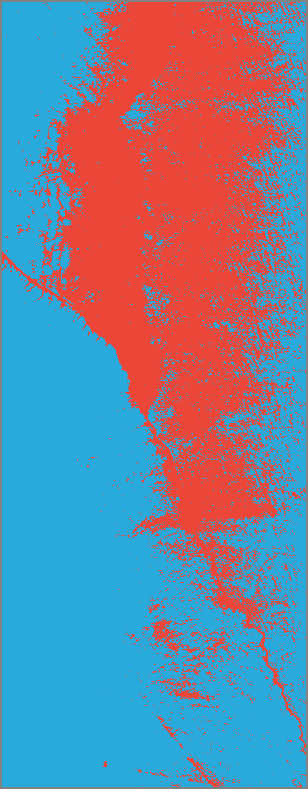
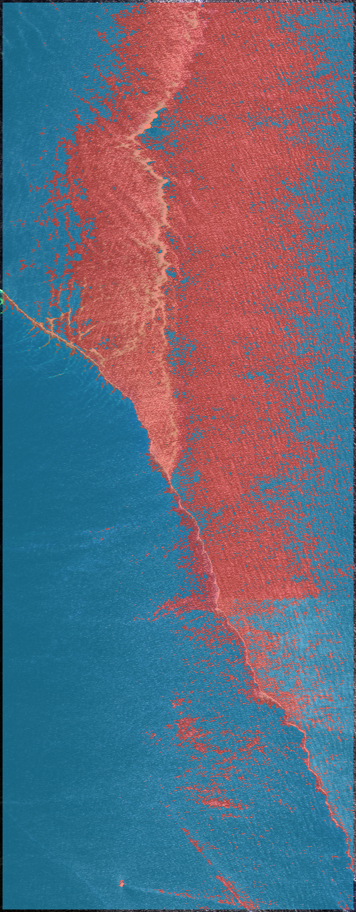

Actual FPGA model predictions at the classified patch centres.
Red = predicted oil · Blue = predicted water · Grey = unclassified.
The five-pixel border is unclassified. The scene preview is a three-band composite of the actual hyperspectral data. Scene metrics are not a confirmed independent test-set result.
Predicted oil: 478,289 centres (39.09% of classified centres). Predicted water: 745,375. Unclassified: 24,750. Oil regions: 4,236.
Measured scan time: 449.39 seconds. Mean FPGA inference call: 0.2188 ms per patch.
Click any image to read its zero-based pixel coordinates.


Results and scene metrics · Oil-region pixel coordinates · Per-centre oil scores · Classes: 0 water, 1 oil, 255 unclassified
Zero-based row/column; inclusive bounds; not geographic coordinates.
| Region | Pixels | Top-left (row,col) | Bottom-right (row,col) | Centroid (row,col) |
|---|---|---|---|---|
| 1 | 432549 | (5, 5) | (1708, 693) | (563.79, 405.93) |
| 2 | 2548 | (1404, 341) | (1482, 453) | (1440.61, 381.46) |
| 3 | 1679 | (1534, 362) | (1585, 476) | (1563.14, 420.60) |
| 4 | 1339 | (1713, 424) | (1780, 509) | (1753.43, 460.53) |
| 5 | 588 | (1440, 467) | (1488, 511) | (1459.67, 491.21) |
| 6 | 391 | (732, 608) | (770, 639) | (751.20, 622.33) |
| 7 | 356 | (411, 124) | (473, 145) | (440.78, 133.52) |
| 8 | 304 | (808, 571) | (847, 605) | (831.27, 585.84) |
| 9 | 303 | (1473, 418) | (1496, 465) | (1486.87, 446.39) |
| 10 | 288 | (903, 618) | (941, 637) | (923.78, 628.52) |
| 11 | 274 | (5, 644) | (34, 672) | (17.27, 658.05) |
| 12 | 271 | (1639, 370) | (1672, 400) | (1654.61, 385.04) |
| 13 | 263 | (524, 88) | (551, 114) | (537.62, 101.57) |
| 14 | 260 | (679, 632) | (707, 677) | (693.53, 649.48) |
| 15 | 254 | (1367, 334) | (1386, 363) | (1375.23, 348.46) |
| 16 | 239 | (1315, 432) | (1338, 473) | (1326.45, 452.07) |
| 17 | 220 | (716, 632) | (740, 655) | (727.48, 643.15) |
| 18 | 219 | (921, 584) | (939, 611) | (931.54, 597.07) |
| 19 | 218 | (239, 299) | (255, 339) | (246.59, 321.84) |
| 20 | 214 | (60, 189) | (86, 215) | (70.89, 201.21) |
{
"status": "COMPLETE",
"source_name": "GM02.mat",
"identity": {
"model_sha256": "6985462767744b40c760ed1fff075c3c350d281aff4d705253e52fb010a8c3e4",
"cube_sha256": "b04c9ed0bb232aedfe88788f061263d7e409f5fba4118a1d781c0fa3fc6e8dcc",
"scene_metadata_sha256": "d0ec47e994c6f2621cd0b5f7a607715a79c6dbfdb7f4164b44d346484224a68c",
"stride": 1
},
"source_sha256": "d3c59c083f2f766f3e20c259e50a6ab32e487cc513b4a4b1d5d2fbc6d5fed229",
"source_original_shape": [
1786,
699,
224
],
"preprocessing_contract": "hsi-138-scene-percentile-1-99-v1",
"python": "3.10.6 (main, Aug 1 2022, 20:38:21) [GCC 12.2.0]",
"numpy": "1.23.3",
"finished_utc": "2022-11-09T05:47:13.230171+00:00",
"scene_shape": [
1786,
699
],
"classified_centers": 1223664,
"unclassified_pixels": 24750,
"predicted_oil_centers": 478289,
"predicted_water_centers": 745375,
"coverage": "Every valid centre",
"border_pixels": 5,
"threshold": "logit >= 0 => oil",
"fingerprint": "0x101000056010407",
"test_split_status": "NOT_CONFIRMED_HELD_OUT",
"graph_coverage": [
{
"name": "subgraph_FinetunedCNN__input_0",
"device": "USER",
"op_types": [
"data-fix"
]
},
{
"name": "subgraph_FinetunedCNN__FinetunedCNN_Linear_classifier__ret_27(TransferMatMulToConv2d)",
"device": "DPU",
"op_types": [
"const-fix",
"conv2d-fix",
"download",
"pool-fix",
"reshape-fix",
"upload"
]
},
{
"name": "subgraph_FinetunedCNN__FinetunedCNN_ret_fix_",
"device": "CPU",
"op_types": [
"fix2float"
],
"handled_by": "Host signed-INT8 dequantization, checked against the exact model graph"
}
],
"accumulated_scan_seconds": 449.39417698,
"scan_patches_per_second": 2722.919126863672,
"execution_mean_ms": 0.21880115002159475,
"execution_min_ms": 0.2093499999773485,
"execution_max_ms": 10.95307999992201,
"initialization_seconds_this_session": 21.120964550000053,
"input_conversion_seconds_this_session": 15.60862469999995,
"input_conversion_cache_reused": false,
"optimization": "One loaded model/runner; once-per-scene activation conversion; reused contiguous input/output buffers; 8-row checkpoints",
"execution_percentile_method": "0.1ms histogram intervals; values >=25.5ms share an overflow bin. Exact benchmark percentiles available separately.",
"timing_scope": "VART execute/wait latency; scan time includes patch copies, decoding and row checkpoints. Initialization includes source verification and input conversion. Offline laptop preprocessing and report rendering excluded. Interrupted uncommitted work is not included in resumed scan totals.",
"predicted_oil_fraction_of_classified_centers": 0.3908662835549628,
"execution_p50_interval_ms": [
0.2,
0.3
],
"execution_p95_interval_ms": [
0.2,
0.3
],
"oil_region_count": 4236,
"largest_oil_regions": [
{
"pixel_count": 432549,
"row_min": 5,
"col_min": 5,
"row_max": 1708,
"col_max": 693,
"centroid_row": 563.7948324929661,
"centroid_col": 405.92528707730224,
"region_id": 1
},
{
"pixel_count": 2548,
"row_min": 1404,
"col_min": 341,
"row_max": 1482,
"col_max": 453,
"centroid_row": 1440.60557299843,
"centroid_col": 381.4587912087912,
"region_id": 2
},
{
"pixel_count": 1679,
"row_min": 1534,
"col_min": 362,
"row_max": 1585,
"col_max": 476,
"centroid_row": 1563.139964264443,
"centroid_col": 420.60452650387134,
"region_id": 3
},
{
"pixel_count": 1339,
"row_min": 1713,
"col_min": 424,
"row_max": 1780,
"col_max": 509,
"centroid_row": 1753.427931292009,
"centroid_col": 460.53174010455564,
"region_id": 4
},
{
"pixel_count": 588,
"row_min": 1440,
"col_min": 467,
"row_max": 1488,
"col_max": 511,
"centroid_row": 1459.6734693877552,
"centroid_col": 491.2091836734694,
"region_id": 5
},
{
"pixel_count": 391,
"row_min": 732,
"col_min": 608,
"row_max": 770,
"col_max": 639,
"centroid_row": 751.1969309462916,
"centroid_col": 622.3299232736573,
"region_id": 6
},
{
"pixel_count": 356,
"row_min": 411,
"col_min": 124,
"row_max": 473,
"col_max": 145,
"centroid_row": 440.7808988764045,
"centroid_col": 133.52247191011236,
"region_id": 7
},
{
"pixel_count": 304,
"row_min": 808,
"col_min": 571,
"row_max": 847,
"col_max": 605,
"centroid_row": 831.266447368421,
"centroid_col": 585.8421052631579,
"region_id": 8
},
{
"pixel_count": 303,
"row_min": 1473,
"col_min": 418,
"row_max": 1496,
"col_max": 465,
"centroid_row": 1486.874587458746,
"centroid_col": 446.38613861386136,
"region_id": 9
},
{
"pixel_count": 288,
"row_min": 903,
"col_min": 618,
"row_max": 941,
"col_max": 637,
"centroid_row": 923.7777777777778,
"centroid_col": 628.5243055555555,
"region_id": 10
},
{
"pixel_count": 274,
"row_min": 5,
"col_min": 644,
"row_max": 34,
"col_max": 672,
"centroid_row": 17.266423357664234,
"centroid_col": 658.0547445255474,
"region_id": 11
},
{
"pixel_count": 271,
"row_min": 1639,
"col_min": 370,
"row_max": 1672,
"col_max": 400,
"centroid_row": 1654.6051660516605,
"centroid_col": 385.04428044280445,
"region_id": 12
},
{
"pixel_count": 263,
"row_min": 524,
"col_min": 88,
"row_max": 551,
"col_max": 114,
"centroid_row": 537.6235741444867,
"centroid_col": 101.57414448669202,
"region_id": 13
},
{
"pixel_count": 260,
"row_min": 679,
"col_min": 632,
"row_max": 707,
"col_max": 677,
"centroid_row": 693.5346153846153,
"centroid_col": 649.4769230769231,
"region_id": 14
},
{
"pixel_count": 254,
"row_min": 1367,
"col_min": 334,
"row_max": 1386,
"col_max": 363,
"centroid_row": 1375.2283464566929,
"centroid_col": 348.46456692913387,
"region_id": 15
},
{
"pixel_count": 239,
"row_min": 1315,
"col_min": 432,
"row_max": 1338,
"col_max": 473,
"centroid_row": 1326.44769874477,
"centroid_col": 452.07112970711296,
"region_id": 16
},
{
"pixel_count": 220,
"row_min": 716,
"col_min": 632,
"row_max": 740,
"col_max": 655,
"centroid_row": 727.4818181818182,
"centroid_col": 643.1545454545454,
"region_id": 17
},
{
"pixel_count": 219,
"row_min": 921,
"col_min": 584,
"row_max": 939,
"col_max": 611,
"centroid_row": 931.5433789954338,
"centroid_col": 597.0730593607306,
"region_id": 18
},
{
"pixel_count": 218,
"row_min": 239,
"col_min": 299,
"row_max": 255,
"col_max": 339,
"centroid_row": 246.58715596330276,
"centroid_col": 321.8394495412844,
"region_id": 19
},
{
"pixel_count": 214,
"row_min": 60,
"col_min": 189,
"row_max": 86,
"col_max": 215,
"centroid_row": 70.88785046728972,
"centroid_col": 201.21495327102804,
"region_id": 20
}
],
"coordinate_convention": "zero-based row,col; top-left origin; bounding-box maxima inclusive; x=col,y=row",
"region_connectivity": 8,
"region_note": "Regions are model predictions, not verified physical spill boundaries or geographic coordinates",
"scene_metrics": {
"evaluated_centers": 1223664,
"true_oil_predicted_oil": 11940,
"true_water_predicted_water": 745243,
"true_water_predicted_oil": 466349,
"true_oil_predicted_water": 132,
"accuracy": 0.6187834242079525,
"oil_precision": 0.02496398620917479,
"oil_recall": 0.989065606361829,
"oil_f1": 0.0486988157704222,
"oil_iou": 0.024957098455126343,
"interpretation": "Scene agreement only; an independent held-out split has not been established"
}
}